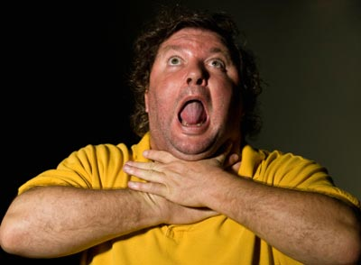
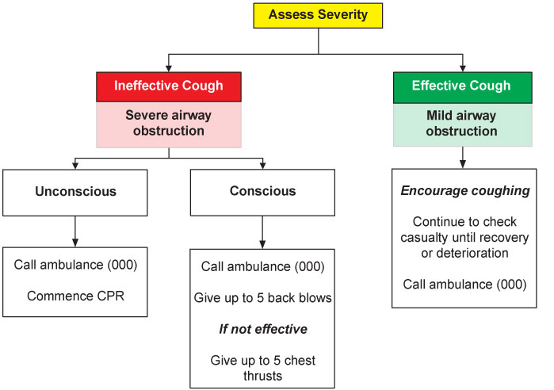

Foreign Body Airway Obstruction (Choking)
Foreign Body Airway Obstruction (Choking)
A foreign body airway obstruction is a life-threatening emergency which follows the lodgement of a foreign object in the casualty's airway. In some instances, the object lodges at the epiglottis, the entry to the airway, but does not actually enter the airway itself. Both situations cause initial coughing, which is the body's reflex action to dislodge the object.
If an object is firmly lodged in the airway, coughing at least keeps it high in the trachea, though may not expel it. However, coughing with an object at the entrance to the airway will generally cause it to be expelled.
Should you encounter a person with an apparent obstruction who is coughing effectively, DO NOT SLAP them on the back. If the obstruction is at the entrance to the trachea, then reactions to the slaps may cause the person to inhale the object and cause complete obstruction.
If a casualty appears to be in increasing distress, then the object may be totally obstructing the airway.
Partial Obstruction

Signs and Symptoms
 difficulty in breathing
difficulty in breathing
 wheezing
wheezing
 snoring sound
snoring sound
 persistent cough
persistent cough
 cyanosis (blue skin colour)
cyanosis (blue skin colour)
 in children and infants
in children and infants
 flaring of the nostrils
flaring of the nostrils
 in-drawing of the tissues above the sternum and in between the ribs
in-drawing of the tissues above the sternum and in between the ribs

Care and Treatment
 encourage the casualty to keep coughing
encourage the casualty to keep coughing
 if blockage has not been cleared call Triple Zero (000) for an ambulance
if blockage has not been cleared call Triple Zero (000) for an ambulance
 reassurance
reassurance
 DO NOT slap the casualty with a partial obstruction on the back
DO NOT slap the casualty with a partial obstruction on the back
Complete Obstruction

Signs and Symptoms
 unable to breathe, speak or cough
unable to breathe, speak or cough
 agitated and distressed
agitated and distressed
 may grip the throat
may grip the throat
 bluish skin colour
bluish skin colour
 rapid loss of consciousness
rapid loss of consciousness


Care and Treatment
Conscious casualty
 position yourself to deliver back blows
position yourself to deliver back blows
 stand slightly behind and to the side of the casualty
stand slightly behind and to the side of the casualty
 support the chest with one hand
support the chest with one hand
 lean the casualty well forward
lean the casualty well forward
 deliver up to five firm back blows between the shoulder blades using the heel of the hand
deliver up to five firm back blows between the shoulder blades using the heel of the hand
 check mouth and clear any obstructions that may have come loose after each back blow
check mouth and clear any obstructions that may have come loose after each back blow
 deliver up to five chest thrust
deliver up to five chest thrust
 chest thrusts are given in a similar way to chest compressions but are sharper and delivered at a slower rate. Place your hand in the centre of the chest as for CPR
chest thrusts are given in a similar way to chest compressions but are sharper and delivered at a slower rate. Place your hand in the centre of the chest as for CPR
 check mouth and clear any obstructions that may have come loose after each chest thrust
check mouth and clear any obstructions that may have come loose after each chest thrust
 repeat back blows and chest thrusts if obstruction not relieved
repeat back blows and chest thrusts if obstruction not relieved
Unconscious casualty
 support the casualty carefully to the ground
support the casualty carefully to the ground
 call Triple Zero (000) for an ambulance
call Triple Zero (000) for an ambulance
 commence CPR
commence CPR